Featured
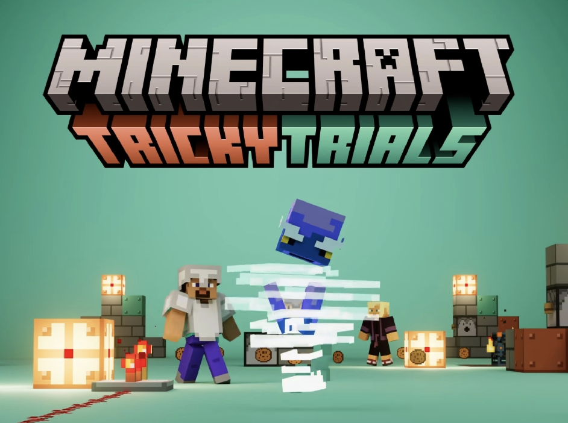
Hi, I'm Albert 👋
Scratch dev since 2022 with 863.69K+ Scratch views and 671.89K+ itch.io views (1.54M+ combined). Now building original high-quality games. Learning JS & Python.
Games, tools, and experiments.

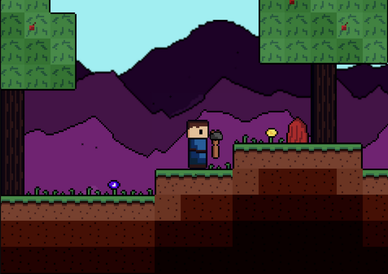
A biblical platformer where you play as David and face off against Goliath.
A clean HTML/CSS/JS habit tracker, my first real web project outside Scratch.
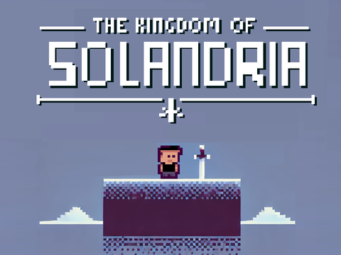
RPG/platformer where shapeshifters threaten the kingdom and only you can stop them. Won the Adventure category in griffpatch's public game jam.
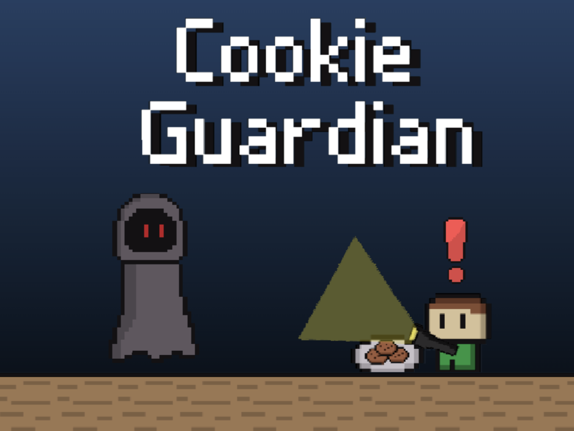
Use your flashlight to protect your cookies from the ghosts of Christmas past, present, and future. Featured on the Scratch front page.
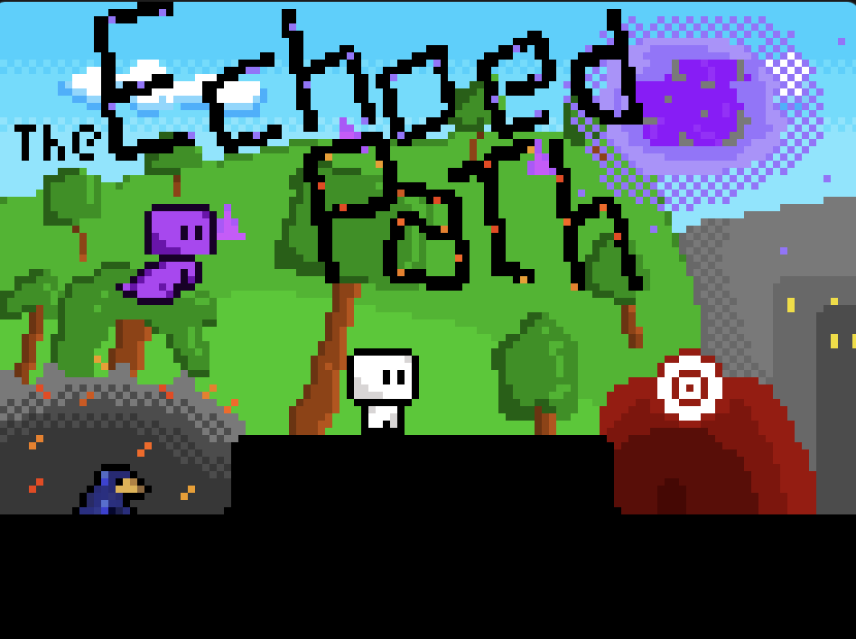
Action-adventure RPG with shooting mechanics made with @Hollow_Song. PGMA S8R1 submission, 2nd place overall, 1st in fan votes among all Scratch entries.
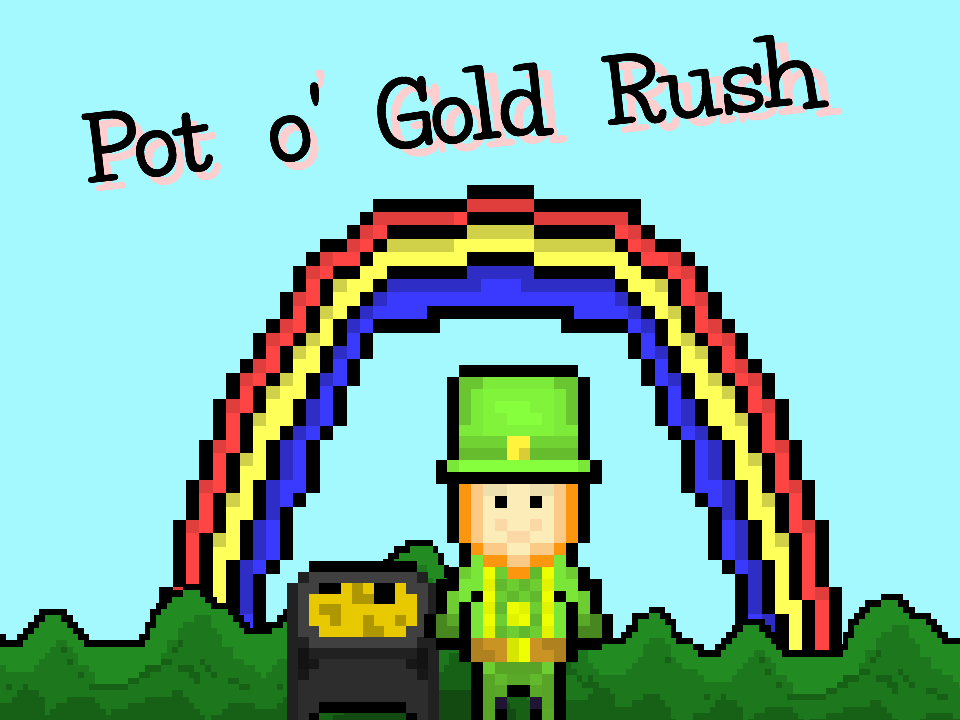
Help a leprechaun recover gold coins in 60 seconds: move with arrow keys, catch coins in your cauldron, and grab powerups. Featured on the Scratch front page on St. Patrick's Day.
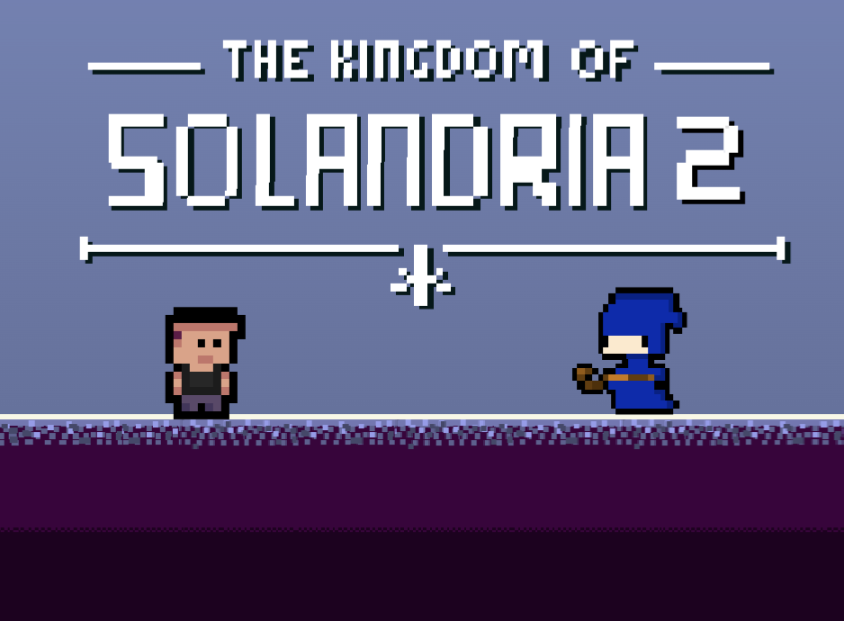
The shapeshifters are gone, but now you have to save your dad. Sequel to Kingdom of Solandria with an inventory system, new levels, and hidden Easter eggs.
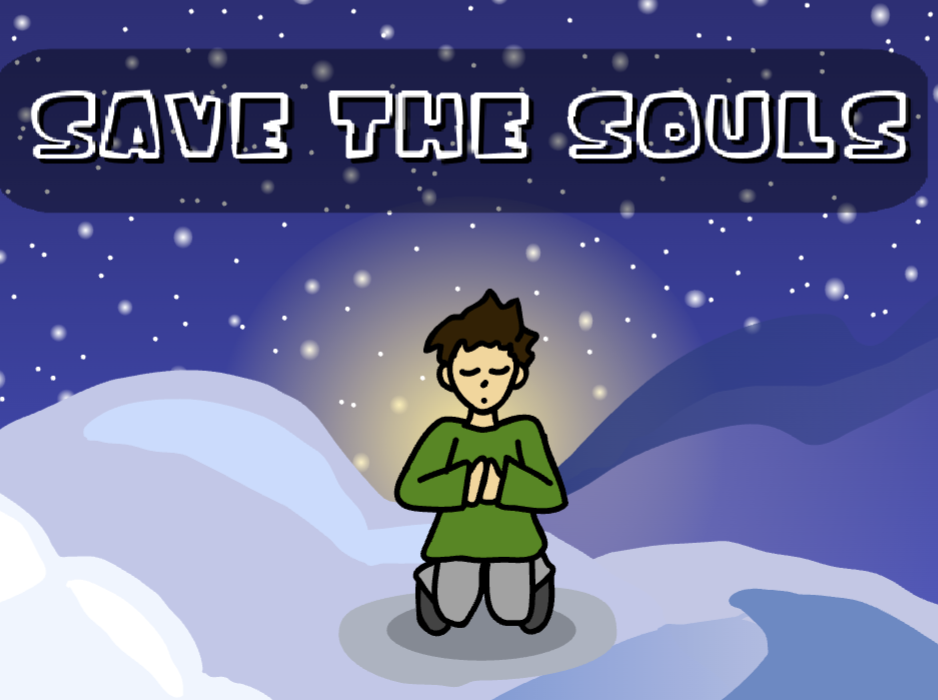
Draw shapes to complete prayers and help souls find peace. Made for Goedware Game Jam #16, theme: "You Can't Save Them All!" Collab with @SkyCedar.
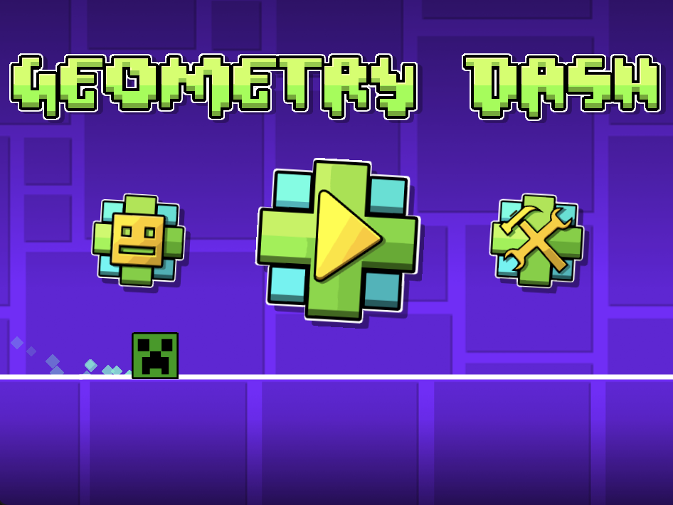
Jump over spikes to the beat across original levels with custom skins. Built with tutorials and assets by Griffpatch, who actually viewed the project himself.
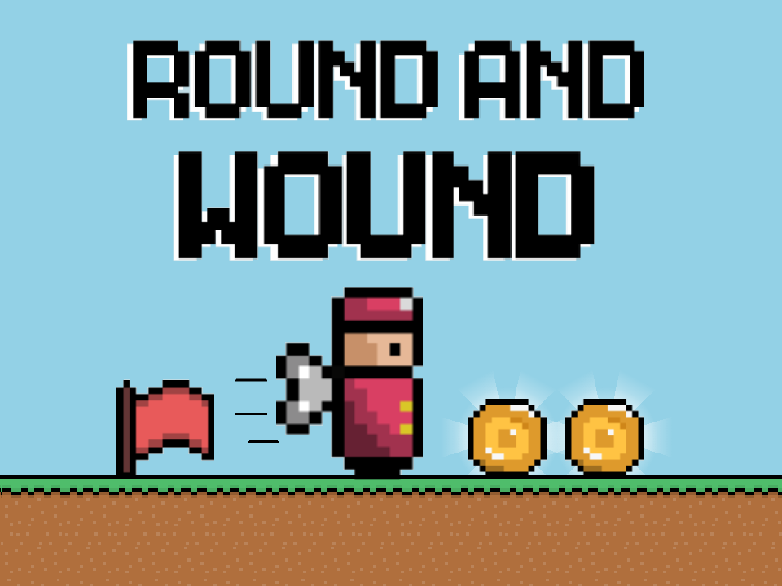
Take control of a wind-up toy soldier from your grandpa's collection! Only moves forward; use springs and arrows to guide it, collect coins, and complete looping obstacle courses.
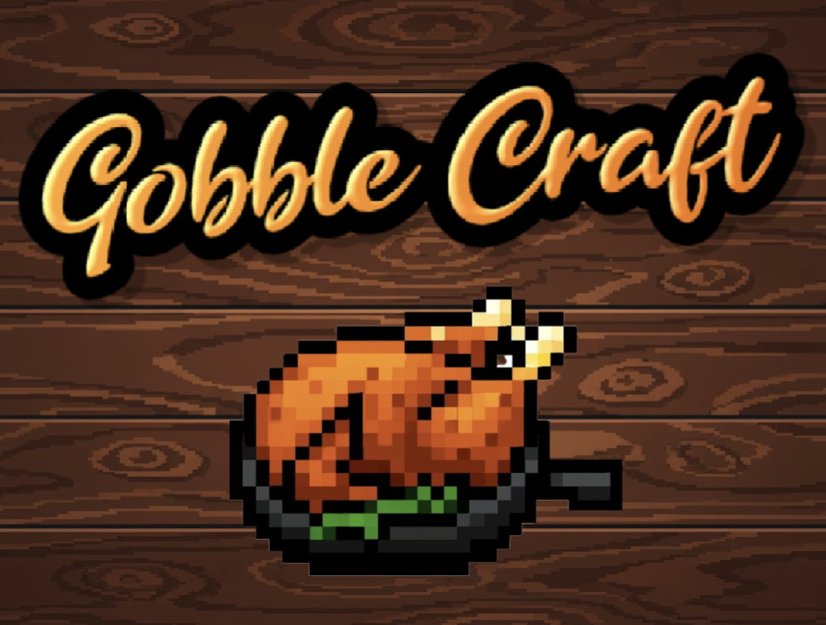
You're a sous-chef preparing a Thanksgiving feast. Drag and combine ingredients to craft dishes across 10 levels: follow the recipe chain and prove you can run the kitchen.
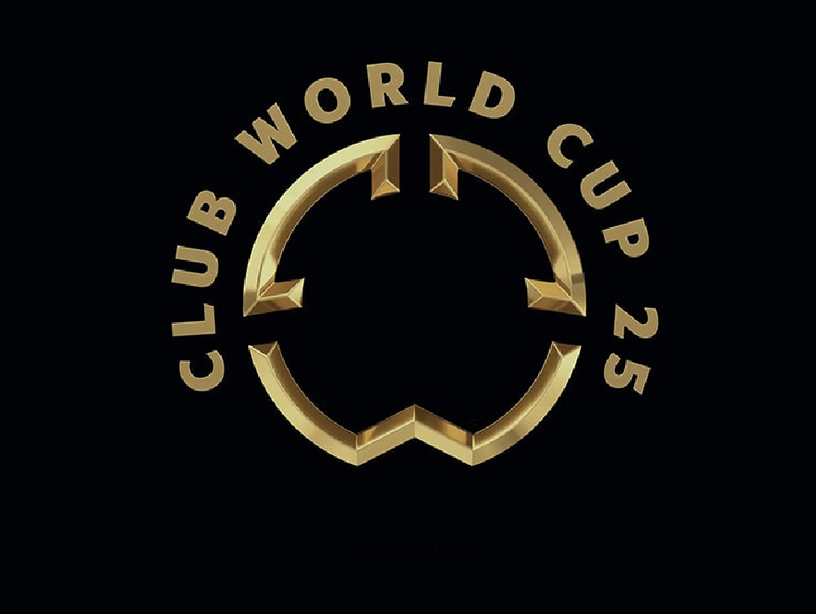
Simulate matches between Premier League, Champions League, and Club World Cup teams. Started as a fun project, evolved into a full Club World Cup simulator with injuries, rivalries, and home/away advantage.
Stats and achievements on the platform.
Feedback from the Scratch community.
Oooo this is so fun to play! And I love how you've drawn the different Scratch characters :D
Nice use of my detection engine!
Fun :3
Very good! I won!
YOOOOO THIS IS SICK

What I can build with right now.
Confident Learning
How I got here.
Opened Scratch for the first time and started writing my first programs.
Published my first game on Scratch and got my first real players.
Remixed griffpatch's Paper Minecraft and built my own heavily modded version, adding new mechanics, biomes, and a full modding API.
Started publishing games on itch.io, reaching a wider audience beyond Scratch.
Took first place in the Adventure category of griffpatch's public game jam, competing against many highly respected Scratch developers.
A project was selected for the Scratch front page, one of the platform's highest recognitions.
Finished Harvard's Introduction to Computer Science in under two months, earning the certificate.
Built Round and Wound with 1_dimensional for the GMTK Game Jam. Shortly after it hit Scratch's Top Loved and Top Remixed charts.
Another project selected for the Scratch front page, cementing a consistent track record.
Working on David vs Goliath, growing web dev skills, and pushing past 1.5M combined views.
I'm a young programmer who loves building games, apps, and websites that people actually enjoy using. Over the past few years I've grown from experimenting with code to reaching 1.54M+ total views across Scratch and itch.io.
My most popular project, Paper Minecraft, crossed 220K views on Scratch and 671.89K+ plays on itch.io. I focus on combining strong mechanics with engaging stories, platformers, RPGs, simulators, and everything in between.
Beyond games, I built a custom Scratch statistics website using Python, helping creators track and analyze their project performance. I've completed Harvard's CS50x and earned 65 college credits while still in school, balancing hands-on development with core CS theory.
When I'm not coding, you'll find me playing soccer or planning the next build.
"I have less time now… I've been working on other projects and also improving my Python and JavaScript."
— from my itch.io comment section